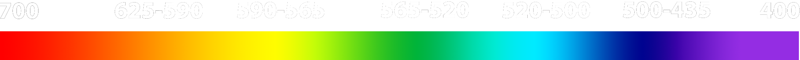

THE VISIBILITY PROJECT
I created the Visibility Project to represent what spectral visibility might look like to an average member of the American Gen Z. The crux of discussion surrounding our interaction with technological devices rests around what and who decides for us, what to see. There’s page ranking, instantaneous information trading, auctions for add companies, and consistently evolving algorithms that all work to seemingly tailer future information to us based on past interaction. And the interesting part is that, this is only the tip of the iceberg.